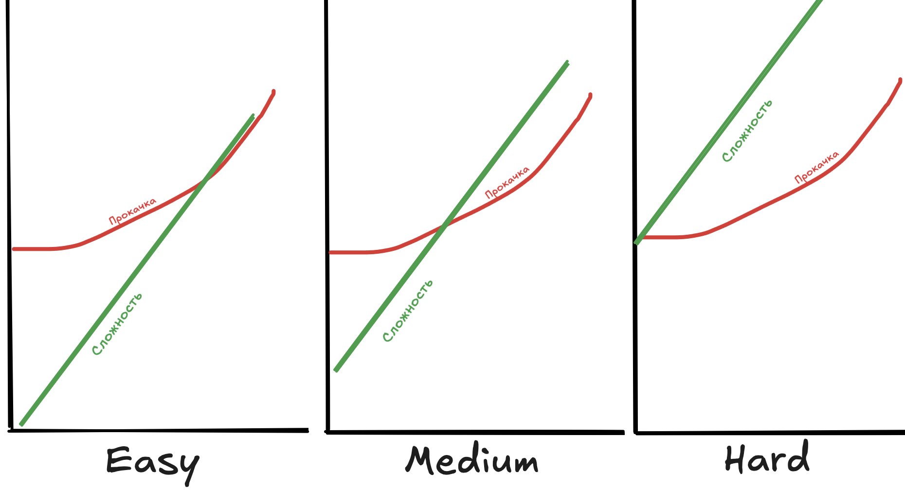
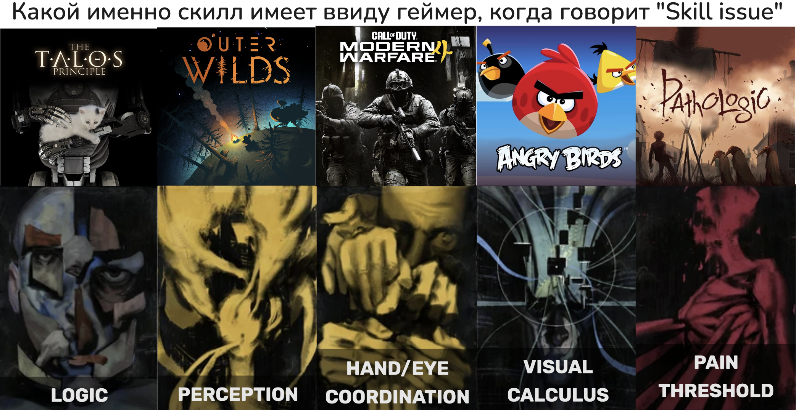

Боль как активный ингредиент игровых механик
That One Puzzle
Скриншот из игры Machinarium:

Machinarium не про паучков и ключи, это поинт-энд-клик-квест про робота. На скриншоте – мини-игра, которую можно пройти по запросу в любой момент, если игрок застрял. Игра очень унылая и медленная; никто не стал бы играть в нее для удовольствия, но если ее пройти, можно увидеть картинку с решением текущего уровня:

Какая интересная механика!
Я помню свой опыт игр во времена, когда у меня дома еще не было интернета. Очень часто в таких «квестах» я застревала на какой-то одной мелочи, и днями топталась на одном месте, не зная, куда нажимать, и перебирая все варианты. В итоге приходилось объяснять маме, о чем идет речь, чтобы она у себя на работе в интернете нашла прохождение и распечатала нужную страничку. Часто я действительно оказывалась дурой; но иногда там было что-то откровенно абсурдное или арканное, до чего догадаться задача скорее не на логику или наблюдательность, а на психологию геймдизайнеров. Но в любом случае это была какая-то одна досадная мелочь, которая блокировала мне всю последующую игру, и пройдя ее по подсказке, я наконец-то могла продолжить играть спокойно дальше и проходить игру своими силами.
Сейчас, конечно, прохождение любого квеста находится на расстоянии трех тапов по экрану телефона, просить маму не обязательно1. И играя в квесты в последние годы, я порой встречаю новый сорт реакции на прочитанный ответ, которого не было тогда. «Блин, точно, я бы могла догадаться, если бы еще подумала!».
Необходимость объяснять маме, что мне нужно, и ждать, пока она принесет распечатку с работы, была неприятным и отжирающим время процессом. Если я могу подумать над задачей еще час, я лучше подумаю еще час, чем подниму бучу. Я пользовалась прохождением, только если ну реально не могла решить загадку. Долбиться головой в игру без прогресса – боль; и вовлекать в игру маму – боль. Я решала пользоваться прохождением, только когда ожидаемая боль от долбления головой превышала порог боли от поднимания бучи.
Это хорошее решение проблемы непроходимых головоломок, блокирующих всю игру. В идеальной игре каждая головоломка находится на грани способностей игрока: игроку надо напрягать мозг, но в итоге он всё сможет решить. В реальной игре какие-то головоломки всегда будут слишком сложные; реальный игрок может по личным причинам затупить там, где все тестеры догадались; реальная логика может быть полностью прозрачна для тебя, но выглядеть абсурдом для всех остальных. Можно рассчитывать, что игрок в трудные моменты подсмотрит в подсказку – но тогда он будет туда смотреть и когда мог бы решить головоломку сам, чем обесценит всю игру; мало у кого есть самоконтроль делать это только в по-настоящему критической ситуации. Но если у игрока есть возможность пройти любую часть, приняв кусок боли, то самоконтроль не требуется. Когда он может проходить, он проходит; когда застревает, он просит маму. Machinarium добавляет маму непосредственно в игру: если ты не можешь пройти головоломку честно, ты всегда можешь вместо этого пройти унылую мини-игру.
Тонкая грань
Испытание для игрока в идеале должно быть на грани способностей – выполнимым, но не тривиальным. В играх с RPG-like прогрессией одна регулярно возникающая, но никогда не успешно решаемая проблема – обеспечить, чтобы прокачка персонажа шла соразмерно с растущей сложностью игры. Если эти эти две линии на графике сильно расходятся, игра так или иначе вырождается. Когда я играла в Legends of Legaia, я бросила на боссе, который оказался чисто численно непроходим для меня на тот момент никакой комбинацией действий. Я пошла фармить уровни, но скоро потеряла интерес. И наоборот, Baldur's Gate III для меня постепенно теряла и теряла геймплейную сложность. Даже на максимальной настройке сложности игра представляла испытание только в первой половине. Весь третий акт был тривиально простым, потому что моя партия была до безобразия перекачана. Многие механики перестали иметь смысл: никакие тактические опции, ситуативные заклинания или редкие расходники банально не были нужны, ведь простого закидывания врага одними и теми же атаками хватало для победы в любом бою.
Но я сама себе выкопала эту яму – первые два акта я старалась закрыть все квесты, найти все секреты и надеть лучший шмот. Кто-то другой, менее дотошный или менее внимательный, прокачается к этому моменту меньше, и ему будет сложнее. В этом одна из сложностей баланса прокачки: разные игроки будут вкладываться в прокачку больше или меньше. Если, в зависимости от вложения, мощь персонажа в любой конкретный момент варьируется сильно, то игра с какого-то момента станет либо тривиальной, либо непроходимой. Если же слабо – то в чем смысл игроку вкладываться, зачем проходить побочные квесты и искать лучший шмот?
Другая сложность в разном уровне навыка игрока. Какой-то игрок достаточно умен и ловок, чтобы пройти бой даже с отставанием по уровню; какой-то достаточно плох, что будет иметь проблемы даже при преимуществе. Частично это решается разными настройками уровня сложности, но если кривые фундаментально расходятся, то глобальный уровень сложности может только лишь изменить направление расхождения, а не суть. Если бы я играла в Baldur's Gate III на (гипотетической) достаточной сложности, чтобы для моей партии акт 3 был сложен, то акт 1 я бы пройти не смогла. В Legend of Legaia, если бы я играла на (гипотетической) достаточно низкой сложности, чтобы пройти того босса, я бы разносила всю предыдущую игру без малейших усилий.

В совсем печальной ситуации приходится менять уровень сложности во время игры. В Skyrim у меня неизбежно наступает момент, когда рядовые противники в подземелье ложатся легко, а последний босс-драугр теряет 0.03% здоровья от выстрела лука из скрытности и убивает меня с одного тычка, и после этого игра превращается в фарс, где я под каждый энкаунтер подбираю свой уровень сложности. Тут даже оправдание «открытый мир, мы не можем знать в каком порядке…» не работает, потому что кривая поломана в рамках одного линейного подземелья.
(другое плохое решение из той же серии игр – чтобы все противники росли в уровне вместе с тобой. Когда продвинутые гайды по Oblivion рекомендуют никогда не спать, чтобы никогда не расти в уровне – система очевидно не работает. Не буду надолго останавливаться на этом моменте; о недостатках автолевелинга уже до меня сломали три фаланги копий и запинали десяток мертвых лошадей)
Общего готового решения проблемы кривой сложности относительно прокачки пока никто не нашел. Для каждой игры находят свой способ усидеть одновременно на всех этих стульях:
- сложность боев всю игру не слишком высокая и не слишком низкая
- прокачка персонажа на самом деле значительно влияет на сложность боя
- это работает как для игрока, который прошел весь опциональный контент, так и для игрока, который его пропускал
- (бонусный раунд для RPG с открытым миром) это работает вне зависимости от того, в каком порядке игрок исследует открытый мир
Насколько на самом деле важно, чтобы игрок был достаточно прокачан? В Legend of Legaia, как и в большинстве jRPG, это критически важно – если игрок недокачан, то пройти очередной бой может быть просто математически невозможно, придется допрокачиваться. А, например, Dark Souls теоретически можно пройти без прокачки вообще, если достаточно постараться – недокачанность значит только что бой займет больше попыток, пока не научишься.
На этих примерах можно заметить асимметрию между проблемой перекачанности и проблемой недокачанности. Если игрок перекачан, то вся дальнейшая игра для него обесценится, и он мало что с этим может сделать. А если недокачан – то он может стараться больше. Фармить, пока не станет достаточно сильным, и пробовать перепроходить бой раз за разом. Это займет время и усилия, но при желании рано или поздно он сможет.
Наблюдательный читатель заметит параллель с примером из Machinarium. Если очередная задача слишком сложная, то игрок всегда может ее пройти, вложив немного боли. Тупой гринд опыта или corpse run по одному и тому же маршруту это скучно и неинтересно. Но это делает персонажа сильнее; сделай это достаточно раз, и ты сможешь пройти задачу, на которую своих сил не хватает. Никому не нравится гринд, но он – своего рода решение проблемы кривой сложности. Благодаря нему переоценить силу игрока или персонажа во время баланса не страшно. Если игроку не хватает сил, он всегда может добить разницу болью.
Театр жестокости
Одна кропотливая задача, которую может потребоваться делать гейм-дизайнерам – просчитывать экономику ресурсов. «Ресурсами» могут быть буквально 


 , но также и патроны, здоровье, время, голод… Если это число, которое может обмениваться с другими числами, то это ресурс, и его надо класть в таблицу Excel, и там точно посчитать. Сколько в среднем экономит здоровья в бою лишний патрон для дробовика? Source и sink – так называют точки, через которые ресурсы поступают в систему или уходят из нее. Шахта производит золото, на него ты покупаешь зелье лечения, им восстанавливаешь здоровье, которое тебе снимает заточкой гоблин – шахта здесь source, а гоблин sink.
, но также и патроны, здоровье, время, голод… Если это число, которое может обмениваться с другими числами, то это ресурс, и его надо класть в таблицу Excel, и там точно посчитать. Сколько в среднем экономит здоровья в бою лишний патрон для дробовика? Source и sink – так называют точки, через которые ресурсы поступают в систему или уходят из нее. Шахта производит золото, на него ты покупаешь зелье лечения, им восстанавливаешь здоровье, которое тебе снимает заточкой гоблин – шахта здесь source, а гоблин sink.
Ресурсы, которые игрок получает от гринда, обычно моделируются как source. Игрок поубивал слаймов и получил опыта/золота/слизи; ему не пришлось обменивать какой-то другой ресурс на них, они появились «из ниоткуда». В F2P мобилочках иногда учитывают как ресурс время, которое тратит игрок – чтобы его можно было выкупать донатами, конечно же. Но если мы занимаемся не этим и смотрим на игру как на произведение искусства, то почему бы вместо этого не учитывать как ресурс боль?
Ключевая мысль в этом посте косвенно вдохновлена случайно услышанным рантом Николая Дыбовского. Я вспомнила о нём сейчас, потому что недавно переигрывала его игру, «Мор. Утопия». Она очень искусно использует боль игрока как ключевой элемент. Эту игру обычно описывают как очень сложную, но в классическом понимании сложности игр это совсем не так. Поначалу, пока ты не понимаешь, как тут все работает, может быть и запутаешься, но как только ты понял хотя бы примерно, как работает местная экономика, несложно получить больше денег, еды и лекарств, чем требуется для прохождения. Времени на всё тоже хватает; все квесты дня порой можно закрыть до восхода солнца2. Но несмотря на это, она все равно чувствуется сложной духовно, и это не только из-за откровенно садистского нарратива.
На шестой день истории Гаруспика для главного квеста надо достать Тае Тычик 50 альфа-таблеток. Это не трудно физически. Таблетки дешевые, и денег у тебя к тому моменту будет более чем хватать. Достаточно обойти все аптеки города и купить их. Но, господи, как же это бесит! Для Гаруспика эти таблетки бесполезны (это самые слабые иммуники в игре, а для иммунитета он может почти забесплатно варить более эффективные твириновые настойки), так что все найденные к тому моменту таблетки ты, вероятно, продавал – и только сейчас узнал, что зря. В каждой аптеке их мало; надо долго и уныло гулять по всему городу, и потом обратно к Тае, которая живет глубоко в жопе города3. И они ей даже не нужны, так-то! Это лишь детский каприз, она не понимает, что эти таблетки вообще делают, она даже число назвала явно от балды, и мы выполняем этот бессмысленный и беспощадный fetch quest, только потому что весь Уклад на нее молится.
Или ты можешь этого просто не делать. Каждый день, если не выполнить главный квест, то его выполняют за тебя твои приближенные, и кто-то из них от этого заболевает чумой. В последний день город спасен, если все они здоровы. Так что если у тебя завалялась лишняя панацея или «порошочек», то можно весь день заниматься более интересными делами, и потом просто вылечить того, кого зацепило. Эти лекарства очень редкие, и, возможно, какие-то из них придется потратить на себя. Но они, по сути, дают «право на ошибку» – возможность провалить один дневной квест и все равно пройти игру.
(замечание для полноты. Два других лекаря проходят свои сюжетные ветки параллельно с игроком, и их приближенные тоже заболевают, на этот раз случайно и вне твоего контроля. Если кроме своих приближенных вылечить еще чужих, то можно увидеть дополнительные бонусные сцены. В дальнейшем я не буду этого учитывать. В рамках ресурсной модели можно считать это тремя уровнями сложности – стремишься ли ты сохранить здоровыми один, два или три набора приближенных)
Итак, у нас есть ресурс, «порошочки»4. Игрок может найти «порошочек» в некоторых точках по сюжету, получить его как редкий дроп с маленьких девочек, или, иногда, найти в чумном доме. Игрок может потратить «порошочек» на то, чтобы вылечить себя или приближенного. Если на всех приближенных не хватит, игра проиграна.
Значительная часть экономики «порошочков» работает по обычной логике сложности выживача. Все успехи или неудачи сводятся к плюсу или минусу к счетчику «порошочков». Чем больше у тебя осталось свободного времени, тем больше ты можешь потратить на поиск «порошочков». Чем больше ты добудешь обменных ресурсов, тем проще тебе будет купить «порошочек» у девочки. Чем лучше ты избегаешь чумы, тем меньше шанс, что тебе придется съесть «порошочек». Чем больше ты можешь купить антибиотиков и обезболивающих, тем проще тебе будет пережить заражение, не тратя «порошочек». Чем более крутые снотворные ты можешь достать, тем меньше потратишь времени на сон. Чем лучше ты дерешься, тем меньше потратишь в бою здоровья, и тем меньше придется тратить денег на бинты, а значит больше денег останется на лекарства…
Сложность всего этого выживательного слоя игры не такая уж и высокая. Если бы на этом все заканчивалось, то «Мор. Утопия» никогда бы не заработала славы сложной игры. Но момент с унылым квестом про 50 таблеток плохо отражается в числах. Да, выполнение этого квеста потребует потратить немного ресурсов из кубышки «на выживание», но карман не потянет. Один «порошочек» куда ценнее, чем 50 таблеток. Настоящая сложность в том, что игроку надо испытать кусок боли. Или получить -1 к счетчику «порошочков».
Момент с Таей показательный, но других моментов боли в игре много. Есть внесюжетные квесты, которые требуют испытать боль, и дают ценную награду. Есть зараженные дома, в которых лежит полезный лут, но которые исследовать стрессово. Копаться в каждой мусорке в поисках бутылок очень скучно и муторно, но их потом можно обменять на бинты. Часты моменты, когда ты понимаешь, что сказал что-то не то в диалоге 2 часа назад, и перед тобой стоит очень интересный выбор, загрузить игру и переиграть кусок заново, или смириться с уроном счетчику «порошочков».
Для гипотетического игрока с неограниченным болевым порогом игра очень легкая, это как бесконечные деньги на донаты. Если тебя не пугает эмоциональный урон5, то ты можешь им пользоваться как неограниченным source и проходить игру расслабленно и без усилий. Но большинство людей не такие. Большинство не готовы регулярно нажимать на кнопку «ты получаешь 999 игровой валюты, но тебя бьют кувалдой по яйцам».

Обезболивающее
Как боль может быть source, так она может быть и sink. Обратная сторона терпения боли ради ресурсов – расход ресурсов ради уменьшения боли.
В самом топорном исполнении такая фича есть как «удобства». В Skyrim можно купить крафтинговые станции себе домой, чтобы не пришлось идти в соседний двор и пользоваться чужой; это не дает никаких гейплейных преимуществ, но устраняет немного рутины.
Но в более широком смысле, если смотреть через линзу боли, такие моменты можно заметить много где. Я помню свой опыт в Vampire: The Masquerade – Bloodlines с пакетами крови. Многие «проходные» боевые энкаунтеры было полностью в моих силах пройти без них, риска умереть там не было. Это было порой муторно и долго. Но если я была готова потратить пакеты, я могла пройти их намного быстрее и проще, просто закидав всех кровавой магией. И я могла не беспокоиться о том, чтобы уворачиваться от атак – кровью залечу. Во многих RPG так! В стандартном понимании расходники позволяют пройти моменты, которые без них пройти бы не получилось; доступ к ним повышает общий power level персонажа. В видеоэссе о балансе, которые мне попадались, я получила впечатление, что гейм-дизайнеры воспринимают расходники именно так; часто вопрос стоит с позиции, сколько расходников игрок будет тратить в единицу времени, и насколько это повышает кривую прокачки. Но их также можно воспринимать как «обезболивающее». Чем больше игрок сможет добыть ресурсов и чем меньше они ему требуются для прохождения, тем меньше ему потребуется терпеть боли для тех же результатов. Выпить лечебное зелье, вместо того, чтобы ждать пассивной регенерации. Купить транспорт, вместо того чтобы идти пешком. Купить ингредиенты для крафта, вместо того, чтобы собирать их в природе. Всё это варианты, как можно потратить игровые ресурсы, чтобы получить меньше боли.
Часто в игровые экономики добавляют намеренно глубокие sink, куда игрок может сливать все лишние ресурсы. В Hades, после того как игрок прошел и открыл всё и казалось бы ему уже некуда тратить накопленные деньги, появляется директор ресурсов, у которого можно покупать красивые значки за все более бешено растущие суммы. Эти значки ничего не делают, это просто значки «я потратил много денег на значок». Нужно это, чтобы ресурсы не переставали что-то значить. Алмазы – награда за выполнение bounties, но если ты уже купил всё, что можно купить за алмазы, то они перестают быть наградой, и bounties уже как бы и нет смысла выполнять. Даже символическая награда (в теории) лучше никакой; видеть, что этот сложный бой продвинул тебя на единицу ближе к покупке значка, дает драгоценный тыц дофамина и создает ощущение цели и прогресса.
В третьем акте Badur's Gate III мне не хватало sink. В начале, когда я получала опыт или находила сокровище или уникальную шмотку, это что-то значило: я знала, что это сделало меня сильнее. В конце награды и сокровища ничего не значили; всё и так проходилось тривиально. Мне было скучно, и пришлось вкладывать силу воли, чтобы пройти игру до конца. Последний акт включал в себя много сортов боли – фрустрацию, скуку, ментальное «замыливание» от перегруза информацией без сопутствующих тыцов дофамина. Я никак не могла эту боль избежать, и я не получала в обмен на нее ничего.
Можно ли было сделать так, чтобы эти проблемы взаимно уничтожились? Сделать sink, в который я могла вливать ресурсы для того, чтобы избегать боль – тем самым и уменьшив боль, и замедлив мою прокачку? Я не знаю, сработает ли это в рамках рулсета D&D5 с его очень негибкой прогрессией. Может, давать меньше опыта за опциональные квесты, предлагать в наградах больше расходников, и сделать сами расходники более удобными в использовании, чтобы игрок их не хоардил? Тогда бои будет сложно пройти без расходников, но можно будет потцениально бесконечно облегчать его с ними… наверное. Сложно дать конкретное решение, не зарываясь в конкретные числа конкретной игры. Но расчет экономики ресурсов всяко будет проще, если добавить боль в явном виде как source и как sink – это целых две дополнительных регулируемых степени свободы.
Оптика зеркальной башни
Через линзу боли можно переформулировать проблему кривой прокачки.
Игра ставит перед игроком испытания, игрок их превозмогает и от того испытывает катарсис. Чтобы играть было интересно, нужны обе половины цикла. Если испытание слишком трудное, то мы получаем боль без облегчения. После того как я двадцатый раз убиваюсь об босса и все никак не могу его победить, это просто боль. Пока босс не ляжет, катарсиса не будет. Если же испытание слишком легкое, я не испытываю боли, и победа для меня ничего не значит. Мне скучно, дофамин не тыцает.
Чтобы достижения в игре имели для меня смысл, они должны облегчать какую-то боль. Если я получаю новый уровень или нахожу сильную шмотку, это что-то для меня значит, только потому что какое-то будущее испытание будет для меня менее болезненным. Но это сразу же создает и проблему – если оно не болезненно совсем, то и облегчения не будет.
В третьем акте Baldur's Gate III случилось именно это – sink боли оказался недостаточно глубоким, к середине игры я заполнила его до краев. Больше сливать боль было некуда. Я испытывала боль, и никакие мои действия не могли ее уменьшить. В Legend of Legaia случилось обратное – source оказался недостаточно плодородным. Я могла дофармить несколько уровней до босса, но я сдулась раньше.
Это значительно меняет понятие «сложности»! Когда мы говорим «игрок перекачан и дальше играть слишком легко», мы намекаем, что проблема в нехватке сложности, но это не так. Я играла в игры, которые целиком были для меня проще, чем третий акт Baldur's Gate III, и мне не было скучно. Проблема в первой производной от сложности. Мои действия должны уменьшать сложность. Когда я придумываю новую тактику, она должна действительно позволить мне пройти бой с меньшей болью. Когда я концентрируюсь на том, чтобы научиться уворачиваться, это на самом деле должно позволить мне пройти босса хотя бы на одну попытку раньше. Когда я получаю новый уровень, он должен действительно сделать мне дальше играть проще. Хоть децл боли должен слиться в sink. Это дает смысл придумыванию тактик, улучшению навыков и получению уровней. Игра вырождается, когда sink заполняется и цикл «боль-облегчение» перестает работать.
Если через эту линзу смотреть на экономику ресурсов, то боль это единственный настоящий source и единственный настоящий sink. Игра сама по себе – закрытая система; все, что происходит внутри компьютера – это обмен одних ресурсов на другие. Единственная связь этой системы с внешним миром – пользователь, и все, что может делать пользователь – это получать или тратить боль6. Слаймы, которые бесконечно возрождаются и потому служат бесконечным источником лута – не source; чтобы они могли производить лут, игрок должен вложить боль в то, чтобы их фармить. Они обменивают боль на лут. Где-то ниже по течению этот лут должен как-то облегчить игроку боль, иначе нет смысла его фармить. Так что если катарсиса не происходит, смотрите на боль. Заполняется sink, истощается source, или, может, где-то посередине боль забила узкое место. Как двигатель Карно производит энергию, перекачивая тепло, так игра производит катарсис, перекачивая боль.
хотя ей может быть приятно – когда ты последний раз разговаривал с мамой?
NB: это справедливо для первой части, она же Pathologic Classic. Сиквелы работают иначе
Нет, серьезно

панацеи считаем «порошочками»; в рамках этой модели разницы между ними нет
или если ты играешь не первый раз и уже desensitized
«Или деньги!» скажут дизайнеры F2P игр. Исключаем их из рассмотрения by fiat
 Ответить по почте
Ответить по почте Оставить анонимный комментарий
Оставить анонимный комментарий